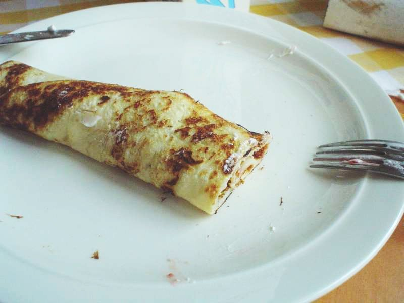

Crepe

Igredientes
- 400 gramas de farinha de trigo.
- 400 mililitros leite.
- 2 colheres de sopa de manteiga.
- 1 colher de chá de sal.
- 2 ovos.
- Recheio a gosto.
Preparo
- Misture todos os igredientes no liquidificador.
- A fogo baixo, adicione a massa em uma frigideira larga.
- Vire quando o centro solidificar.
- Adicione o recheio.
- Dobre a massa ao meio.
- Frite até obter a coloração desejada.
Retornar